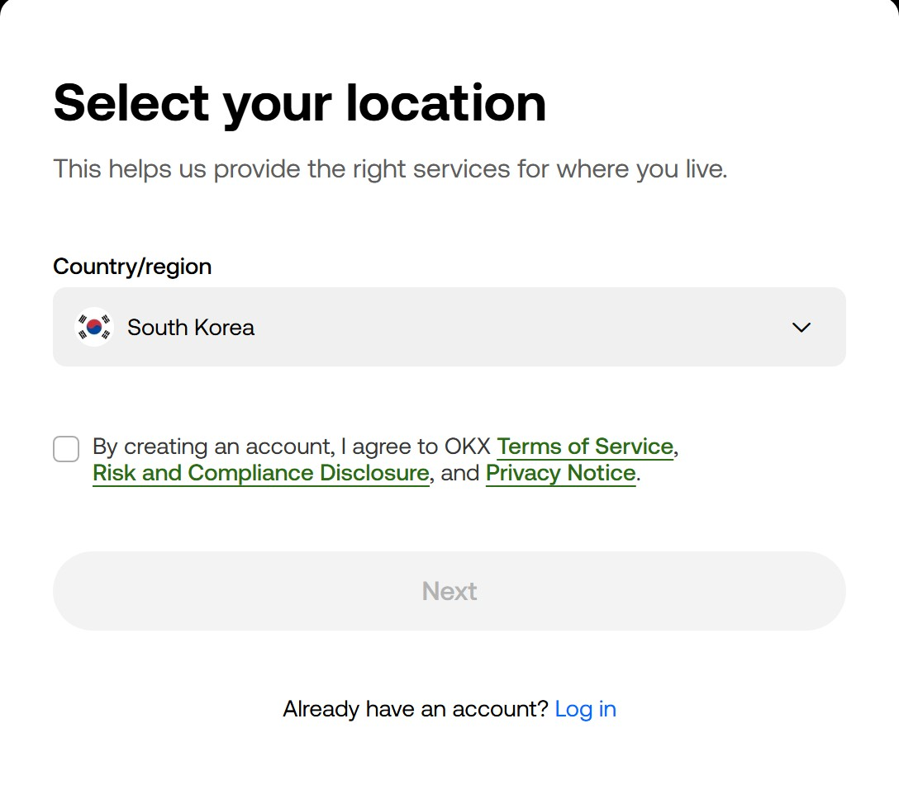
OKX 会不定期改版。本指南里的按钮名称以页面实际显示的英文为准，照着找就行。
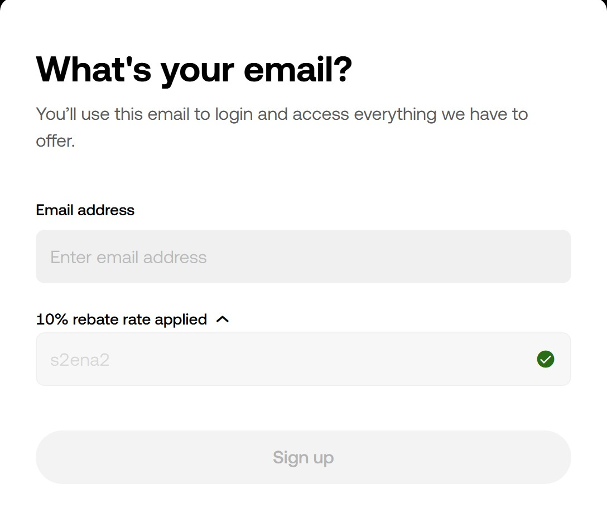
10% rebate rate applied，会看到邀请码 S2ENA2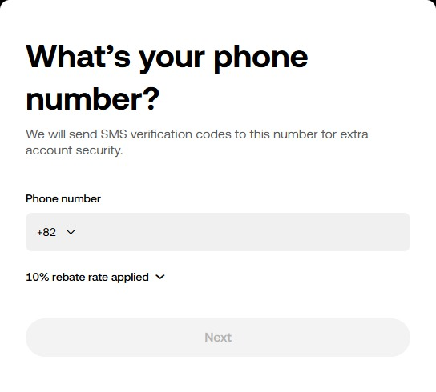
10% rebate rate applied。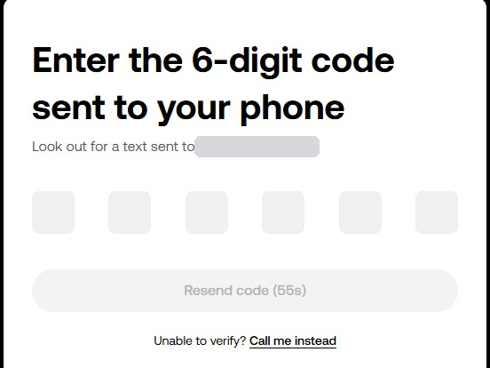
提币和安全验证都会发短信到这个号码，别用可能停用的号码。
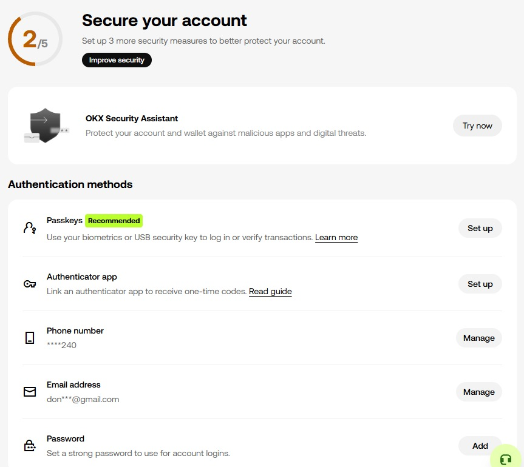
充值前才急着设置是最糟的顺序，
入金之前先把这一步做完。
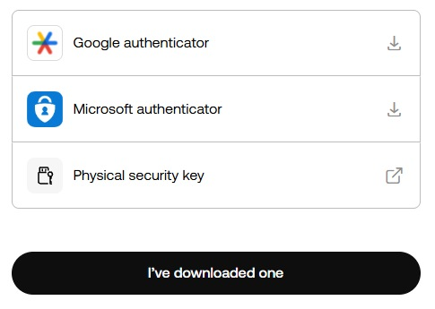
按 1/2 短信、2/2 邮箱的顺序输入 6 位验证码，
和注册时一样，不用慌。
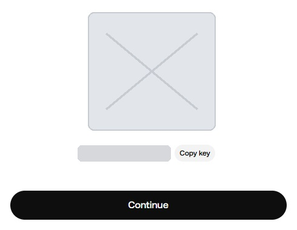
有了这个值，别人就能生成你的验证码。
出现时抄在纸上，单独保管。
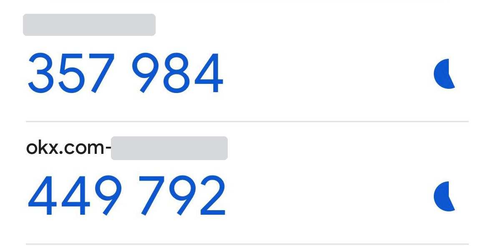
让你抄下 setup key 就是为了这个。
有密钥就能在新手机上恢复。
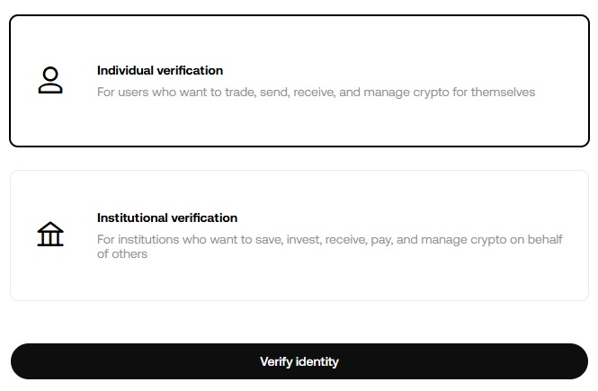
认证之前，充值地址根本不会显示。
姓名和出生日期要和证件完全一致。
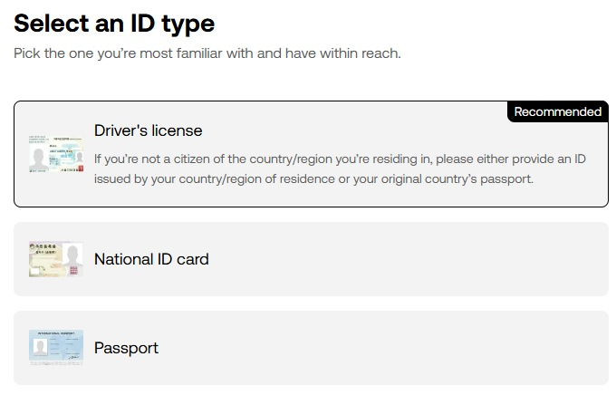
就算在电脑上操作，下一屏也会切到手机摄像头，
把手机放在手边再开始。
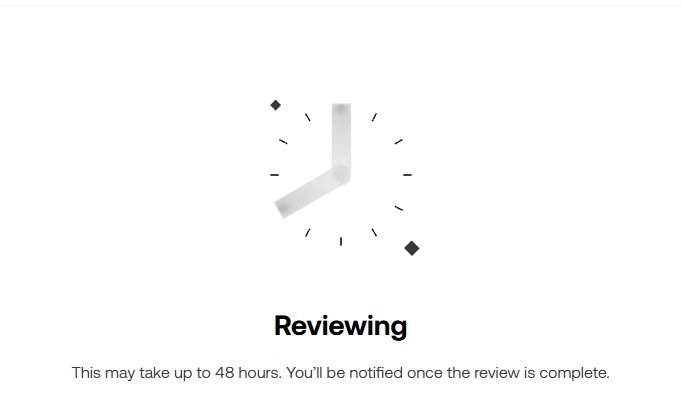
通常几分钟到几小时完成，
期间不用做别的。
有些地区无法直接绑定银行账户。下面这条路在哪里都走得通：
很多交易所在法币入金或刷卡买币后会暂时限制提币，请提前准备。
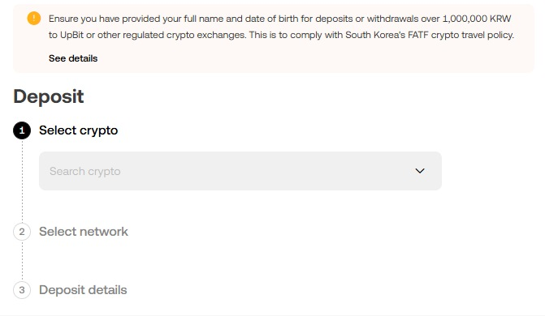
USDT。左上角显示 Funding 就说明进对页面了。
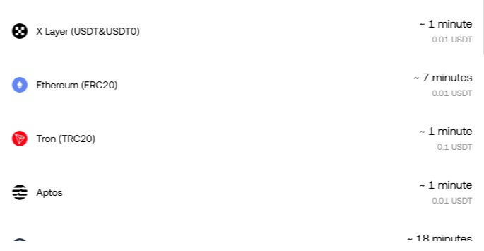
转出和转入的网络不一致，
币就会丢失且无法找回。
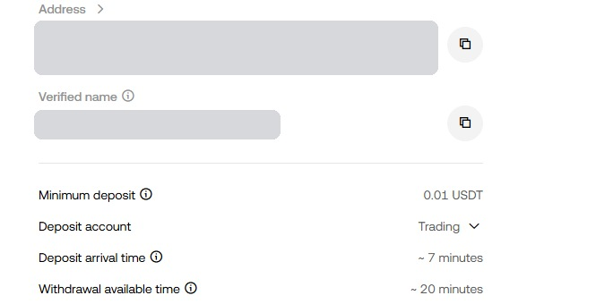
Trading，可以直接交易。一定用复制按钮。错一个字符，钱就没了。
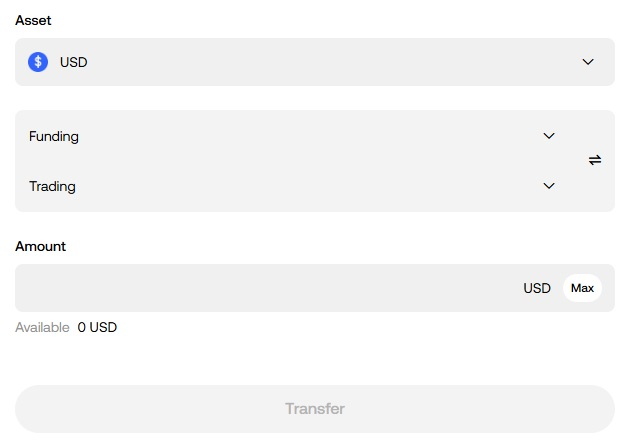
如果上一屏的 Deposit account 是 Trading，这一步可以跳过。
Funding → Trading 就对了。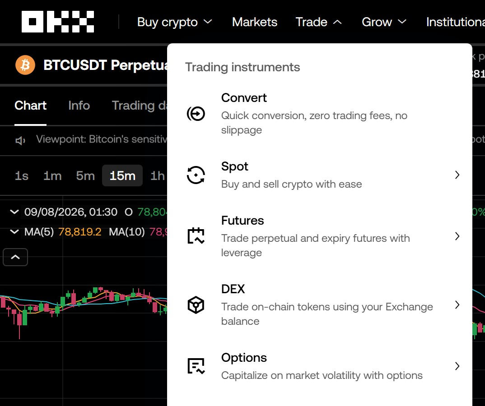
Spot 是没有杠杆的现货交易。
本指南以 Futures 页面为准。
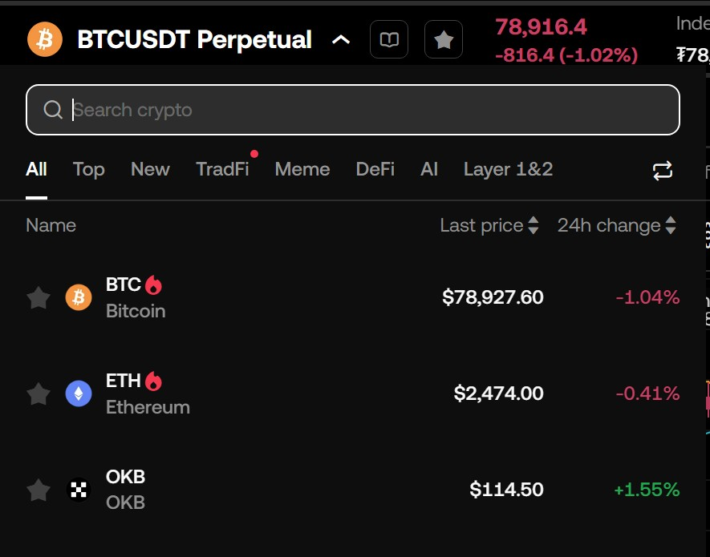
成交量大，容易成交，价格也不容易乱跳。
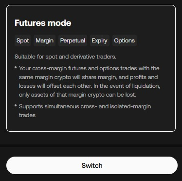
那是把多种币一起作为保证金的高级模式。
刚开始用 Futures mode 就够了。
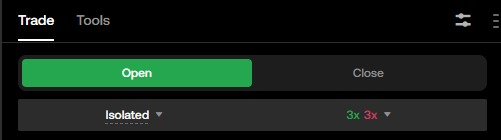
逐仓最多只亏这笔单里投入的钱。
全仓是拿账户里全部资金做担保，被套深了会全部亏光。
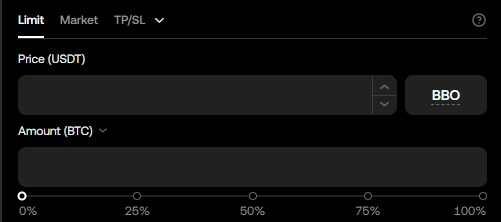
立刻成交，也不用填价格。
代价是成交价可能稍差一点。
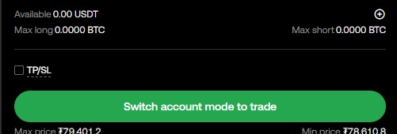
带杠杆时，行情反向会瞬间被强平。
每次下单都顺手填上 SL 价格，才能保住本金。